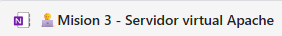
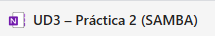
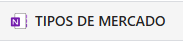
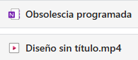

Sobre Mí
Soy Lucas Pedro Garcia Esteve y soy un estudiante del Colegio Profesional Sorolla. He estudiado el primer año de grado medio de Sistemas Microinformáticos y Redes (SMR) y ahora estoy cursando el segundo año. De momento, no he trabajado ya que no tengo la edad necesaria y tampoco me ha interesado mucho, prefiero centrarme en los estudios.
Galería de Proyectos
Proyecto Fabrica 4.0
Debes investigar sobre la fábrica donde te gustaría hacer tus prácticas. Tienes que explicar a qué se dedica esa empresa y elaborar una lista con todos los adelantos tecnológicos que utiliza, como drones o impresoras 3D, describiendo la función de cada uno. También debes generar una imagen con IA que represente tu puesto de trabajo ideal dentro de esa fábrica e incluirla en un documento Word o PDF. Finalmente, debes indicar todos los elementos tecnológicos presentes en la empresa de tus sueños.

Proyecto Mediation Skills
You should write a text to be included in a blog about why it would be a good idea for the school to use virtual reality in a specific lesson. Write, at least, 80 words. Send it to me through this Assignment.

Proyecto Servidor Virtual Apache
En esta tarea vamos a configurar dos sitios web distintos en un único servidor Apache para simular la gestión de un servidor de hospedaje web.
Proyecto Samba
Un servidor NAS (Network-Attached Storage) es una solución que permite almacenar y compartir archivos a través de una red local. Ubuntu Server, una variante del sistema operativo Ubuntu diseñada para servidores, es una opción popular para implementar un servidor NAS debido a su estabilidad, seguridad y amplio soporte de la comunidad.
Proyecto Tipos de Mercado
Actividad: Clasificación de Empresas según el Tipo de Mercado y Producto. Lee atentamente cada uno de los siguientes casos y selecciona la opción correcta que clasifica a la empresa según:
Proyecto Obsolescencia Programada
Realiza una investigación, muestra en el vídeo como afecta a los usuarios y el problema que genera la basura tecnológica.
Habilidades y Conocimientos
HTML
Dominio de la estructura básica de documentos web y la correcta semántica de las etiquetas.
CSS
Uso de estilos para diseñar interfaces visualmente atractivas, incluyendo responsive design.
Linux
Instalación, configuración y administración básica de sistemas operativos basados en Linux.
Redes
Montaje y configuración de redes locales (LAN) y sus servicios esenciales (DHCP, DNS).
Word
Creación y edición de documentos profesionales, informes y presentaciones escritas.
PowerPoint
Diseño de presentaciones visuales atractivas y efectivas para exposiciones y proyectos.
Contacto
¿Quieres contratarme? **¡Hablemos!**